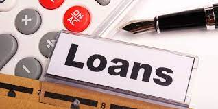

Is a Bank Loan Modification a Good Idea for You?
With all the discussion around loan Modifications along with programs like the Making Home Affordable Program (HAMP) There seem to be an abundance of questions, but not many answers. It's not difficult to see it's true that this HAMP program was put in place to serve a number of legitimate reasons :
to allow people to maintain their homes by reducing mortgage payment - which will prevent foreclosures from the market, and also help to prevent the value of homes from falling more. To qualify to be eligible for a loan modification, you generally only have to meet the following criteria. Kredyty frankowy w ING bank
1.) you are determined to stay in your home
2.) you've faced financial crisis
3) you prove that you're able to pay for the new mortgage with a lower payment.
Financial hardship can result due to loss in income or medical expenses or illness, divorce or perhaps a circumstance which was beyond your control. What constitutes hardship is decided by the loan provider. The main factor in determining the question of whether you'll be able to pay for your mortgage is contingent on your earnings to expenses ratio.
Many of us have stretched our financial resources over the last few decades and have too many debts all over the place. If you're in debt and that's the reason you're seeking an extension of your loan, the best option is to demonstrate that you've worked on paying down your debt and can actually pay less. Your mortgage lender isn't going to bet on the amount you're willing to pay. prove that you're worth taking! The most common complaints from homeowners is that lenders aren't eager to cooperate with them while lenders argue that homeowners aren't providing the correct documents or providing proof of their income in order to qualify for their trial programs.
HAMP stipulates that lenders who are participating ( but not every mortgage lender take part) cut monthly payments to less than 38 per cent of household's income. then the government will add the additional amount to reduce the payments even further to 31 percent of homeowner's income per month. In order to get the payments down to 31 percent mark the lender reduces the interest rate to as little to 2 percent. If that's not enough, the loan terms can be extended as long as 40 years.
The lenders are not required to cut down on the principal amount of the mortgage. If they are accepted in the program, there's three months of trial to make sure that the homeowner is able to handle the new installment. It sounds like a great chance for homeowners who are struggling to take advantage of this program, right? It doesn't appear to be working as well as it should.

Many people believe it's a myth that Making Home Affordable Program is an empty band aid that it's not likely to solve anything and is merely putting off the inevitable. In the last few days, the Office of Thrift Supervision (OTS) published statistics regarding modifications to loans. Kredyt we frankach Deutsche Bank
There are a myriad of stories that describe the difficulties homeowners go through when trying to obtain a modification to their mortgage.
The paperwork is never-ending and as they wait to be admitted into the loan program,, they are falling ever further in debt.
Some even begin receiving foreclosure notices even though their lender must be aware that they're collaboration with their lender! It's supposed to be three months of trial before being accepted into the program, however some are still waiting for approval after 6 months or even longer. Some people who aren't happy with the program are also of the opinion that it does not do enough. Some payments are reduced by a few interest points. While it might seem as if it's a good concept to add overdue balances and other costs on the principal to ensure that the homeowner doesn't have take out additional cash in advance the homeowner might receive a lower monthly installment but still have an increased principal balance, and consequently less equity in their home.